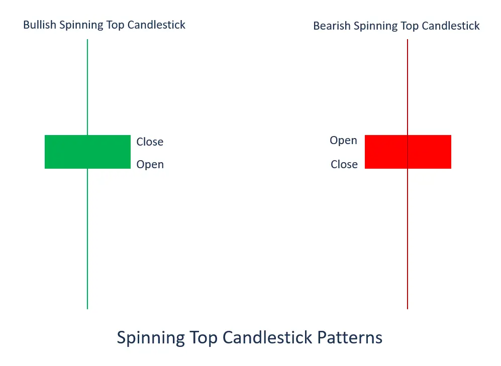
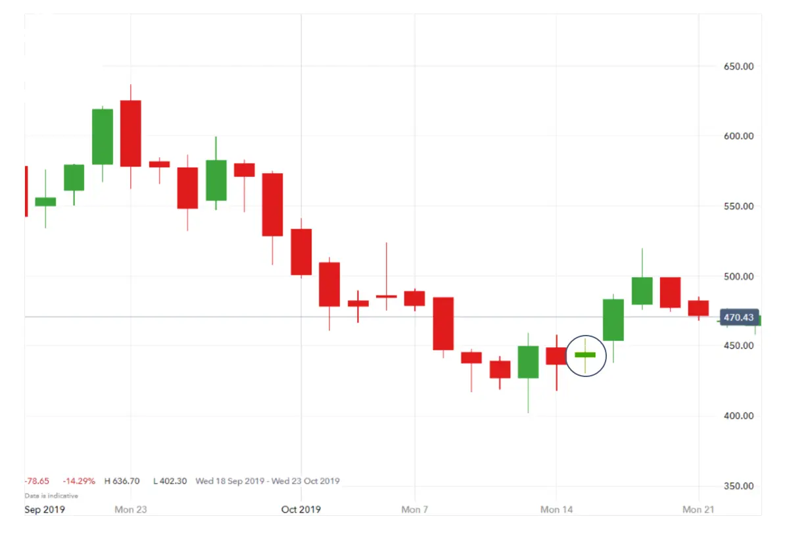

What is Spinning Top Candlestick?

Spinning top candlestick is a pattern with a short body between an upper and a lower long wick. The spinning top illustrates a scenario where neither the seller nor the buyer has gained. It results in equal opening and closing price units.
The formation of a spinning top candlestick helps determine the probability of a price reversal especially if it happens after a price decline. Because of the small variation in the market trend, the candlestick is referred to as a continuation pattern.

| Spinning top chart pattern example |
Let’s assume you’re following Aston Martin’s share price, which opens the trading day at 442p. As sellers enter the market, the share price starts moving, hitting a low of 430p. Buyers start to push back, and the share price reaches a high of 455p before the market settles and the share price closes at 445p. This creates a bullish spinning top candlestick, as pictured below.

Summary
- The dragonfly doji is a signal of a potential reversal in security price with the open, close, and high prices virtually the same.
- After an upward trend, a dragonfly doji indicates a potential price drop, which can be confirmed if the following candlestick moves down.
- Following a downward trend, a dragonfly doji indicates a potential price increase if the confirmation candlestick moves up.
| Spinning top candlestick pattern summed up |
- The spinning top candlestick chart pattern is a formation that occurs when an asset’s price opens and closes at a similar level – it is a sign of rest and consolidation
- The two variations of the spinning top pattern are the bullish spinning top and the bearish spinning top
- A spinning top candlestick forms when the market has explored upward and downward options but then closes at more or less the same price as its opening price
- When you see the spinning top candlestick chart pattern, you can trade using derivatives such as spread bets or CFDs
- With derivatives, you can go long or short because you do not own the underlying asset
Live Example: